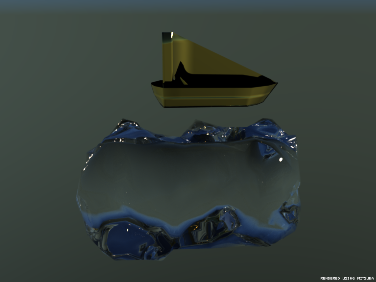
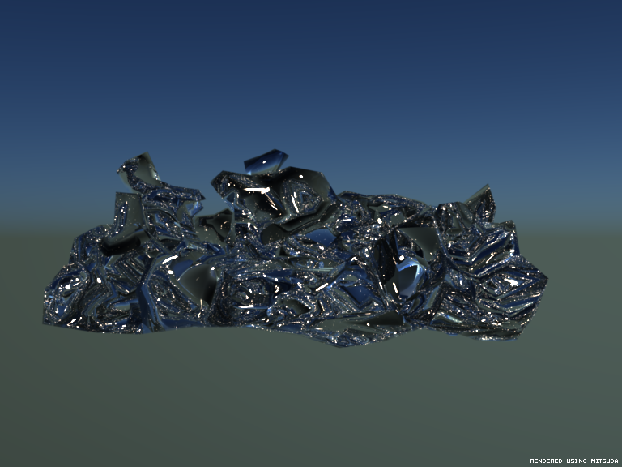
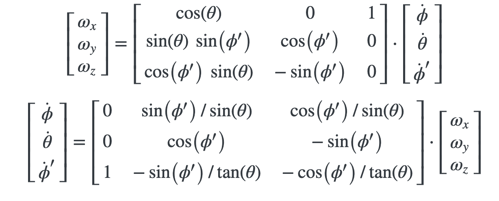

|

|
|  |  |
While fluid simulation is a significant and interesting part of computer graphics, modeling the interaction between solid and fluid objects can be just as important. We wanted to generate a realistic simulation of the interaction between a solid object (a boat) and a body of water. Throughout this project we have implemented fluid simulation using techniques outlined in the paper "Position Based Fluids" and used Euler angles and the center of mass position in order to track the position of our boat as it interacts with the water. We perform mesh reconstruction for the water at each time step by using using Poisson surface reconstruction implemented via the CGAL library.
Representation
We represent both our water particles and our boat particles as the same class, the class WaterPoint. Each WaterPoint has several attributes, including position, last_position, next_position, velocity, and an isBoat boolean that is true if the particle belongs to the boat object, and false otherwise. As the main output of our program is a sequence of XML files to be subsequently rendered into video frames, we first initialize all of the appropriate parameters, such as density of water particles, the time step used in our simulation, and several parameters governing the magnitudes of the forces between the water particles and the boat.
Physical Simulation
At each time step we calculate the appropriate displacement value for each water particle due to interactions with each other, interactions with the boat, interactions with the walls, the velocity, and gravity. We also calculate the displacement of the boat and the torque acting on the boat caused by interactions with the water particles.
We are mostly treating the boat not so differently from the water particles, having the boat pushed away from the water particles. One important difference, however, is that we must keep track of the rotation of the boat, and how it changes in response to torques generated by the interaction with the water points. To do this, we use Euler angles, and the previous values of the Euler angles, which encode information about the angular velocity of our boboat. We use the following equations, from David Browne's website, in order to translate back and forth between the representation using derivatives of the Euler angles and the the angular velocity representation, which is necessary since the torques that we generate can be directly applied to the angular velocity. Once we change the Euler angles and center of mass position of the boat, we translate that to a simple transformation which we use to update the position of each of the boat's vertices.
|  |
Several of these steps rely on the calculation of the nearest neighbors for each point. To do this efficiently, we use a KD tree, implemented by J. Frederico Carvalho. This algorithm lets us find a list of nearest neighbors in O(M * log N) time, where M is the desired number of neighbors and N is the total number of points that we are searching for neighbors in.
Generating Frames & Mesh Reconstruction
To generate a frame we first do mesh reconstruction on the surface of the water. We use the CGAL library in order to do Poisson surface reconstruction. For each water particle we do a nearest-neighbor search within a set radius in order to calculate the position of the average neighbor. Taking the difference vector between our particle and its average neighbor gives us a vector associated with each water point. We use a cutoff to choose only those points which have a large enough magnitude of this vector, which implies that their neighbors are not evenly distributed about the particle, so we determine that this point must be on the surface of the water. For these surface points, we normalize that vector and use it as the normal for that point. From this we use CGAL's Poisson reconstruction function to generate a mesh for the surface of the water. This mesh is then translated into a Wavefront OBJ file containing our water mesh. Similarly, we generate an OBJ file for our boat, using its updated vertex positions. From both of these OBJ files we then create an XML file that can be rendered with Mitsuba.
We also interpolate between the positions of the points in order to try to smooth out the motion of the water more. In this render, we use three interpolated frames between each pair of simulated frames.
Problems Encountered
One of the most prominent issues we faced was that of surface mesh reconstruction. We encountered some issues with our algorithm, and did a lot of research into different algorithms we could use, but we decided to stick with Poisson reconstruction rather than redoing a lot of our code. In hindsight, we would have tried using a cube marching algorithm like that used in Gauthier Dieppedalle, Utkarsh Singhal, and YiDing Jiangh's Spring 2018 Final project. Our algorithm makes the water look smoother, which is definitely a benefit, but ultimately it doesn't represent the true positions of our particles as well as we expect different algorithms could.
Lessons Learned
It is useful to use methods in addition to mesh reconstruction in order to keep track of how the points are behaving, because sometimes the reconstruction is inaccurate and misleading. This also could have helped us determine that switching mesh reconstruction algorithms would have been a good idea earlier in the project when it would have been easier to change our approach.
Our first attempt at modeling boat-water physics did not go over well, mostly attributed to the fact that we had not yet implemented any methods to keep the boat steady. At that point we were not varying the force applied to the boat according to its depth in the water. The gif on the left shows how our boat behaved before implementing this functionality, while the gif on the right shows the improved performance afterwards. We implemented a restoring force on the boat back towards its vertical orientation.
|
|
|
For these two final rendered videos, we implemented a quartic restoring force (the force is proportional to theta^4, where theta is the angular distance between the boat's relative vertical direction and the true vertical direction). This is better because it leaves the restoring force relatively small for small angular displacements and turns on a larger restoring force only when the angular displacement gets relatively large.

|
We also rendered a version with the individual particles visible, each having a small cube mesh drawn around it:

|
B. Solenthaler, J. Schlafli, R. Pajarola. "A Unified Particle Model for Fluid-Solid Interactions." Computer Animation and Virtual Worlds 18, 1 (2007), 69-82.
David Browne, https://davidbrown3.github.io/2017-07-25/EulerAngles/.
Gauthier Dieppedalle, Utkarsh Singhal, YiDing Jiang. "3D Position Based Fluid Simulation and Surfacing." https://yidingjiang.github.io/cs184sp18_final/.
J. Frederico Carvalho, https://github.com/crvs/KDTree.
Jihun Yu, Greg Turk. "Reconstructing Surfaces of Particle-Based Fluids Using Anisotropic Kernels." Eurographics/ACM SIGGRAPH Symposium on Computer Animation (2010).
Miles Macklin, Matthias Muller. "Position Based Fluids." ACM TOG 32(4).
Wenzel Jakob, Mitsuba Renderer, 2010, http://www.mitsuba-renderer.org
The CGAL Project. CGAL User and Reference Manual. CGAL Editorial Board, 4.14 edition, 2019.
Hannah McNeil
Wrote the code to generate the XML files needed to render our scene in Mitsuba, including both the particle view and the mesh surface views. Also wrote the code interacting with OBJ files which are used extensively both internally and for debugging. Performed a lot of the rendering. Contributed to a lot of debugging of the overall project structure and interactions between different files.
Lee Hagaman
Wrote the code for the interactions between water particles using the paper by Miles Macklin and Matthias Muller as a reference. Also implemented the interactions between water particles and the boat and walls, including generating the forces on the boat and tracking how that affects its position and orientation. Also contributed significantly to the design of the project structure.
Walker Snedaker
Created the boat mesh in blender, including many different versions with different number of vertices as we changed how we planned to treat the boat vertices in relation to the physics simulation. Did significant research into different rendering techniques, and performed a lot of the rendering. Contributed to a lot of debugging of the physical simulation and rendering.